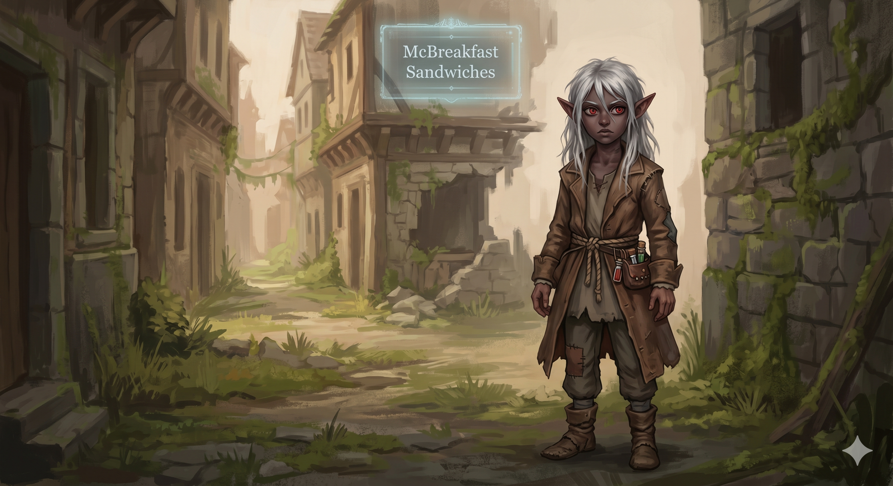

Appears in: Couch Potato Crisis
Profile

- Appears in: Couch Potato Crisis
- Aliases: Mara
- Class: Chemist
- Race: Dark Elf
- Personality: Mara begins the story as a frightened, dependent child – a dark-elf girl who has known nothing but captivity and who instinctively clings to stronger figures for protection. Her fear is genuine and bone-deep: raised as property in Zhakara, she has never been free, never made her own choices, and never had to survive without someone else’s orders. After escaping slavery alongside Fin, she is initially paralyzed by the wilderness and the weight of self-reliance. Kiwi’s training forces her to grow up fast, and the transformation is striking. Under pressure, Mara discovers a methodical, analytical mind suited to the chemist class – she learns to strengthen consumables, craft grenades, and turn everyday items into weapons far more dangerous than her level should allow. Her Enhanced Use ability lets her make a grenade devastatingly powerful, a feat that surprises everyone around her and proves she is far more than a helpless child. When Kiwi appoints her assistant administrator of McBreakfast Sandwiches, Mara rises to the responsibility with quiet competence, managing the ruined town’s systems and relaying Kiwi’s distress messages through the administration interface. She is cautious and deliberate where Fin is bold and pragmatic – where he frames the save-point cage as justice, she is the one who thinks through the logistics and makes sure the trap holds. Her bond with Fin is the emotional anchor of her arc: she calls him her brother, and their chosen-sibling relationship gives her the safety to grow from terrified captive into capable survivor. By the end of the story, she has earned her place not as someone’s property but as a valued member of the resistance.
- Backstory: Mara was born into slavery in Zhakara, a dark-elf girl raised in captivity with no memory of freedom, family, or life outside her owners’ control. In Zhakara’s brutal system, enslaved elves are treated as disposable property – rented out for dangerous dungeon runs, used as cannon fodder in boss fights, and killed without consequence because the save-point system ensures they simply respawn for reuse. Mara grew up alongside Fin (Fingaerion), a high-elven boy enslaved under the same owners – Marnie and Caymie. The two formed a bond of mutual survival, with Fin becoming the closest thing Mara had to family. During a dungeon run (the Prologue), Marnie and Caymie turned on each other over a reward scroll; in the ensuing bloodbath, Fin claimed a dropped scroll and seized the chance to escape. Mara went with him, and the two fled into the Zhakaran wilderness as fugitives – children alone in hostile territory with nothing but the clothes on their backs and Fin’s newly claimed Reverse Stat Shuffle ability.
- Significant story events:
- Prologue (Crisis): Enslaved alongside Fin in Zhakara, Mara is present for the dungeon run where Marnie and Caymie betray each other over the reward scroll. In the chaos, Fin claims the
Reverse Stat Shufflescroll and the two children escape together into the wilderness – Mara’s first taste of freedom. - Chapter 7 – The Chemist and the Mathemagician (Crisis): Kiwi trains Mara (and Fin) in wilderness survival after their escape. Mara begins developing her chemist class here, learning to craft and enhance consumable items. The chapter marks her transition from helpless dependent to someone with useful skills.
- Chapter 12 – McBreakfast Sandwiches (Crisis): Kiwi, Fin, and Mara flee pursuing Zhakaran mechs and discover an abandoned town. Kiwi purchases it through the town ownership interface and renames it McBreakfast Sandwiches. Mara is appointed assistant administrator, responsible for managing the town’s systems – a role that reveals her organizational aptitude and forces her into leadership. Gelkorus later locates the town and recaptures Kiwi, separating Mara from her protector and mentor.
- Chapter 15 – The Hunter and the Hunted (Crisis): Marnie, their former enslaver, tracks Fin and Mara to McBreakfast Sandwiches. Working together, Fin and Mara trap her, kill her, and repeatedly control her respawns via the caged save point – turning the system that enslaved them against their former oppressor. Mara’s Enhanced Use ability makes her grenades devastatingly effective in the confrontation, proving her combat value.
- Chapter 23 – Message in a Bottle (Crisis): Kiwi, imprisoned and unable to escape physically, exploits the city administration interface of McBreakfast Sandwiches to send her coordinates through the town’s systems. Mara helps relay the message, acting as the communication link between the captive princess and the outside world.
- Chapter 25 – Beachhead (Crisis): Tasha’s allies arrive and turn McBreakfast Sandwiches into a functional beachhead and refugee node for the rescue campaign. Mara, now a capable administrator, helps coordinate the town’s transformation from abandoned ruin into strategic base.
- Epilogue (Crisis): Mara survives the war. With Fin, she has gone from enslaved child to resistance operative and town administrator – a complete transformation from the frightened girl who could only follow orders to someone who gives them.
- Prologue (Crisis): Enslaved alongside Fin in Zhakara, Mara is present for the dungeon run where Marnie and Caymie betray each other over the reward scroll. In the chaos, Fin claims the
- Notable Quotes:
[Mara speaks through action more than words. The wiki records no direct dialogue for her, but three chapter-attributed moments capture her character voice:]
Chapter 15 – The Hunter and the Hunted: Mara’s Enhanced Use ability turns a standard grenade into a devastating weapon against her former enslaver Marnie – the moment that crystallizes her growth from helpless captive to dangerous combatant. Where Fin frames the save-point cage as justice, Mara is the one who thinks through the logistics and makes sure the trap holds.
Chapter 12 – McBreakfast Sandwiches: When Kiwi appoints her assistant administrator, Mara accepts the first position of real authority she has ever held without hesitation – a quiet act of self-belief from a girl who has been told her entire life that she is property.
Chapter 23 – Message in a Bottle: Mara relays Kiwi’s coordinates through the town administration interface, acting as the communication link between the captive princess and the outside world. She is cautious, methodical, and effective – the same traits that make her a natural chemist now turned to intelligence work.
- Relationships:
- Fingaerion (Fin): Chosen sibling bond – the most important relationship in Mara’s life. Not biologically related, but Mara calls Fin her brother and depends on him as family. They escaped slavery together, survived the wilderness together, and co-manage McBreakfast Sandwiches. Where Fin is protective and bold, Mara is careful and methodical; their complementary temperaments make them an effective team.
- Princess Kiwistafel: Mentor, protector, and co-escapee. Kiwi trained Mara in survival skills, gave her the chemist class training that unlocked her potential, and appointed her assistant administrator of McBreakfast Sandwiches – the first position of real authority Mara ever held. Kiwi told Trista to “protect the kids” (Fin and Mara) rather than attempt an impossible rescue of herself, showing how deeply she valued their safety.
- Marnie: Former enslaver turned prey. Marnie owned Mara as property, used her as disposable dungeon labor. When Marnie tracked them to McBreakfast Sandwiches, Mara participated in trapping and killing her – and in controlling her respawns via the caged save point, turning the mechanics of slavery back on the slaver.
- Gelkorus: The time mage who recaptured Kiwi and separated Mara from her mentor, forcing Mara to continue without Kiwi’s direct guidance.
- [Trista Twinklebottom](./character-trista-twinklebottom.html): Indirect protector. Kiwi instructed Trista to prioritize Fin and Mara’s safety, and Trista served as a guardian during the separation from Kiwi.
- Caymie: Former co-enslaver alongside Marnie. Killed during the Prologue dungeon betrayal.
- References: Couch Potato Crisis: Absconded Princess, Beachhead, Message in a Bottle, Prologue, The Chemist and the Mathemagician, The Hunter and the Hunted, McBreakfast Sandwiches, Epilogue